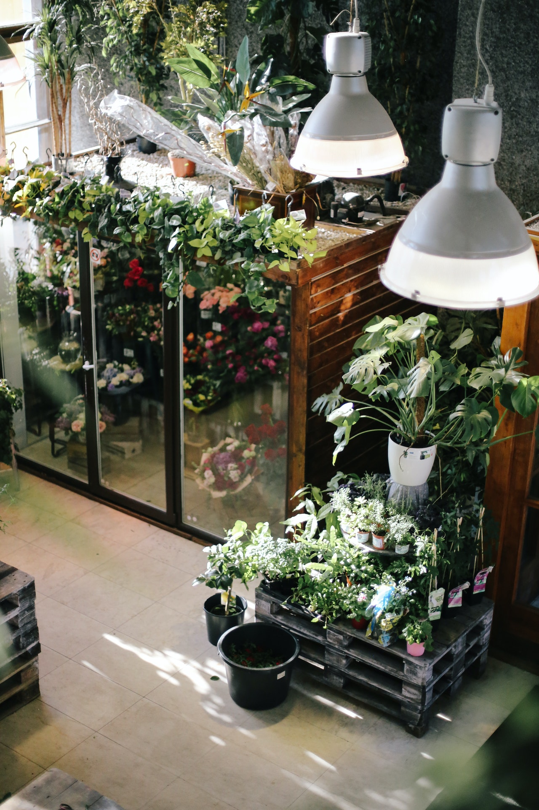

Lugares Para se Conseguir uma Muda
Se você está procurando mudas de plantas e árvores para iniciar um projeto de arborização ou jardinagem consciente e sustentável, existem diversas opções disponíveis. Aqui estão algumas sugestões para encontrar as melhores mudas:
- 1. Viveiros municipais e hortos florestais 🌱
- Os viveiros municipais e hortos florestais são ótimos pontos de partida para adquirir mudas de árvores. Eles oferecem uma diversidade de espécies adaptadas ao clima e solo local. Além disso, esses locais seguem práticas sustentáveis de produção, garantindo mudas de qualidade.
- 2. Feiras e eventos de jardinagem 🌿
- As feiras e eventos de jardinagem são verdadeiros tesouros quando se trata de encontrar mudas de árvores. Nesses encontros, você terá acesso a diferentes espécies e poderá obter informações valiosas sobre o plantio e os cuidados necessários.
- 3. Organizações ambientais e programas de arborização 🌻
- Muitas organizações ambientais e programas de arborização urbana promovem a distribuição gratuita ou a preços acessíveis de mudas de árvores.
- 4. Parcerias com empresas e instituições 🌲
- Algumas empresas privadas e instituições locais possuem programas de responsabilidade ambiental e podem estar dispostas a apoiar projetos de arborização urbana.
- 5. Trocas de mudas entre comunidades 👥
- Participar de grupos ou comunidades locais que promovem a troca de mudas é uma ótima maneira de conseguir novas plantas de forma sustentável. Nessas trocas, você pode compartilhar mudas excedentes do seu próprio jardim e adquirir variedades diferentes das quais você pode se interessar.
- 6. Doações de sementes e mudas 🌱
-
Fique atento(a) a campanhas e eventos que promovam doações de sementes e mudas em sua
região. Essas iniciativas visam incentivar a participação da comunidade na plantação de
árvores e na preservação do meio ambiente.
Lembre-se de escolher espécies adequadas para o seu local de plantio, considerando as condições climáticas, o tipo de solo e o espaço disponível. Siga as orientações de plantio e cuidados para garantir o desenvolvimento saudável das árvores.